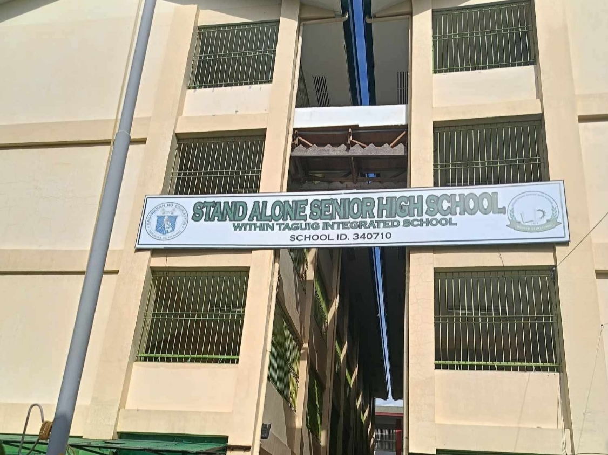
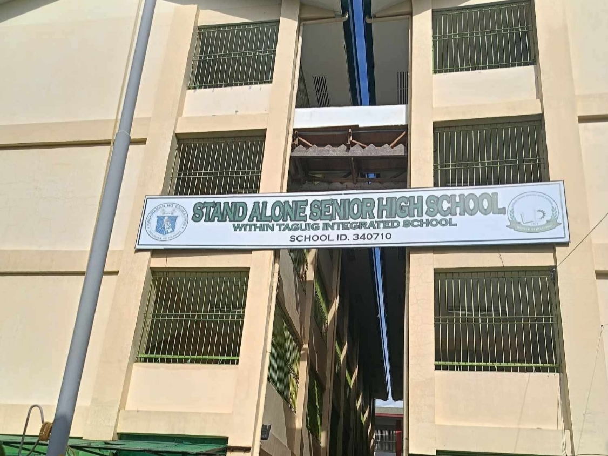

GRADE 11 PRODUCTION
HOME GALLERY CALENDAR
 
 
Taguig Integrated School houses a separate Senior High School (SHS) unit, known as Stand Alone SHS, which is a distinct entity within the larger school complex. This SHS has its own designated area and a separate School Head, distinct from the Junior High School (JHS). It focuses solely on Grades 11 and 12, offering various academic strands to prepare students for higher education, employment, or entrepreneurship.
COLLINE JHEYMS V. CAUBE
11 PRODUCTION